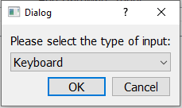
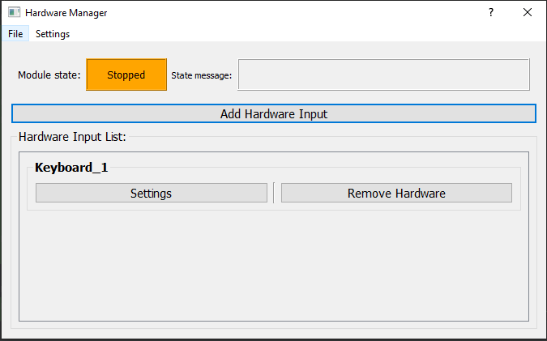
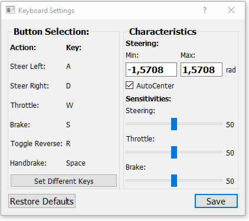
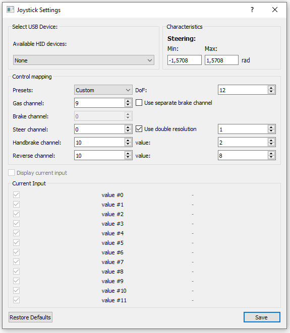

Module: Hardware Manager
The Hardware Manager allows hardware inputs to be connected to JOAN. In this module, the connection with the hardware is established and the raw input data is converted to vehicle commands. For example, this is the place where an 8-bit joystick axis value is converted to a steering angle. Hardware inputs are connected to specific vehicles in the Carla interface module. We provide three base classes for hardware inputs: Keyboard, USB Joystick, and SensoDrive. These will be explained on this page. If you want to connect other hardware to JOAN, you will need to modify an existing, or completely write your own, input class.
In the image below the HardwareManager module is shown how it should look like if you open it up in the
STOPPED state. (without default settings)

Using the Module
Using the module is quite similar to using other 'core' modules of JOAN. You can add/remove devices in the STOPPED state only. This will open up a dialog in which you can choose which input you want to add, which will then pop up in the hardware list, see the pictures below:
 
As mentioned earlier there are (by default) 3 input types you can choose from, in the sections below we'll go into more detail for each of them.
Keyboards
Whenever adding a keyboard it will automatically open up the keyboard settings dialog (if you do it from the add hardware input button):

The settings in the dialog are quite self-explanatory, besides maybe the sensitivities section. The higher the sensitivity the faster it will react to you pushing the appropriate button. You can set different keys by pressing the Set Different Keys button, the button you can change will then light up green, see the GIF below:

Note
If you try to select the same button twice for a different function you will get notified of doing so. You will be able to continue, however, it can lead to erratic behavior.
Joysticks
The second input you can choose from by default is the Joystick input.
Note
The nomenclature Joystick may be a bit confusing since it does not necessarily need to be an actual joystick as you would expect from for example flight simulator. A Joystick in JOAN constitutes nothing more than an HID (Human Interface Device). For example, steering wheels by Thrustmaster or Logitech are also 'Joysticks'.
Whenever adding a Joystick device it will automatically open up the joystick settings dialog (if you do it from the add hardware input button):

Here, the first thing you do is find your plugged-in USB device in the list of available HID devices. In this example
we have an Xbox Controller connected and will try and preview the inputs. Also notice that there are presets available for
both Xbox and PlayStation controllers (if you want to use a PlayStation controller on Windows, install DS4Windows.)

Now if you have a Logitech Steering Wheel or for example some other sort of HID device which is not an Xbox or PlayStation controller you will have to check which channel does what. So for example if you turn the steering wheel and see that both value #01 and value #02 are changing, you'll have to put the steering to channels 1 and 2 with a double resolution. This will take some trial and error but once you have your settings completed you can save them and re-use them. :)
Important
There is a bug where if you are using a newer generation Xbox one controller it will not work with JOAN, this is because windows blocks any input from the controller if it is not used in the active process. And since we use multiprocessing this is impossible to guarantee. The fix for this is using the X-Input library, which is still on our list. For now, it will just not work with the later generation Xbox controllers :(.
SensoDrives
This section is mainly important for TUD students who will have access to a SensoDrive wheel. Firstly, when you add a sensodrive as input
via the add hardware input button it will open up the settings dialog:

The Endstop Position means at which position, the turning of the wheel will simulate a wall, it will be very hard to go through this point. Note that it is not possible to create unsymmetric endstops. 6.28 Radians means it will have an endstop at -360 degrees and 360 degrees.
The Torque Limit settings should just be kept at 200%, which is the maximum, you can lower these values for safety reasons.
The steering characteristics are something more important, this will determine the way your steering will feel. The default settings are okay to start with.
Now the second thing you will notice when you add a SensoDrive is that the hardware tab which is added to the Hardware Manager Dialog is a bit
different than the ones for Joysticks and Keyboards, It contains extra buttons and a state label:

The SensoDrive can in be 1 of three states:
- On (green)
- Off (orange)
- Error (red)
Depending on the state of the SensoDrive you can click the buttons. So if its off, you can turn it on, on to off and you can clear the error if it is in error:
SensoDrive in the off state:

SensoDrive in the on state:

SensoDrive in the error state:

Note
You can use these buttons in both the ready and running states. For more information on the exact workings of a SensoDrive please take a look at the SensoDrive Explanation section
Adding to the Module
If there is any sort of input device or hardware you'd like to add to JOAN, of course you can! The method of doing so is greatly similar to the adding of your own agents described in adding your own agent, please use the same methodology.